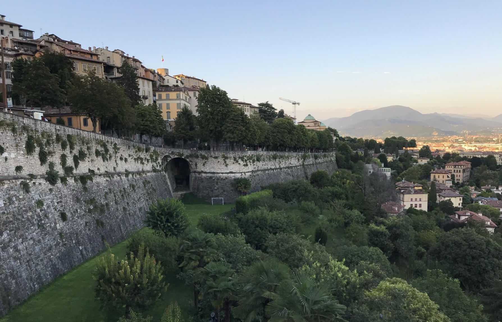

萬國博覽會的啟發 Inspiration from the World Expo
Posted on 6 July, 2025
近來國際局勢動盪：氣候、戰爭、經濟問題接連浮現。剛從大阪世博回來的朋友告訴我，他甚至開始思考移民的可能性。 百年來的萬國博覽會，究竟帶給人類什麼意義呢？展館展示了科技與文化的成果，確實令人驚嘆，但在那背後，是否也反映出人們對當下生活的不安，把希望投射到遙遠未來？
1889年巴黎世博或許最有名的是艾菲爾鐵塔，但對年輕作曲家德布西而言，展覽中的東方音樂才真正改變了他的創作軌跡。第一次聽見五聲音階時，那截然不同的聲響彷彿打開他對旋律與和聲的想像。後來他將這些元素融入創作，逐步發展出朦朧、詩意、夢幻的印象派風格。 他的名作《月光》便誕生於那段時期。德布西因作曲競賽獲獎赴羅馬學習，返程經過義大利Bergamo時，讀到魏爾倫（Paul Verlaine）的詩〈月光〉，詩中描寫月下跳舞的場景與Bergamo的景色觸動了他，便寫下這首後來家喻戶曉的鋼琴曲。
德布西當時不會知道，那場展覽、那首詩、那趟旅程，將深刻改變他的一生和古典音樂風格。而世博的意義，或許也正是如此：它未必直接改變什麼，卻悄悄種下靈感的種子。那可能是一段旋律、一個畫面、一種陌生的概念；雖不會馬上開花，但會在某天某地，悄悄發芽。

In recent times, global instability has become ever more apparent: climate change, wars, and economic uncertainty continue to surface. A friend who just returned from the Osaka World Expo told me he even began contemplating the possibility of emigration. After more than a century of World Expositions, one might ask: what meaning have they truly brought to humanity? The exhibitions showcasing technological and cultural achievements are indeed impressive, but do they also reflect an urge to place hope in a distant future?
The 1889 Paris Expo is best known for the construction of the Eiffel Tower, but for the young composer Claude Debussy, it was the Eastern music he encountered there that profoundly altered his creative path. Hearing the pentatonic scale for the first time, its completely different sound world opened up new possibilities for melody and harmony in his mind. He would later weave these elements into his compositions, gradually developing the dreamy, poetic, and impressionistic style we now associate with his music.
His famous piece Clair de lune was born around that time. After winning a composition competition, Debussy had the chance to study in Rome. On his return journey, he passed through Bergamo in northern Italy, where he read Paul Verlaine’s poem Clair de lune. The imagery of dancers under the moonlight, combined with the scenery of Bergamo, deeply moved him, inspiring the piano piece that would later become beloved by generations.
Debussy could not have foreseen how that expo, that poem, that journey would so profoundly influence his life and reshape the course of classical music. Perhaps this is precisely the value of world expositions: they may not bring immediate change, but they quietly plant seeds of inspiration. A melody, an image, an unfamiliar idea. Though it may not blossom right away, it may one day quietly sprout somewhere, in someone’s mind.